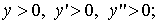

ЗАНЯТИЕ 5.9. ВЫПУКЛОСТЬ И ВОГНУТОСТЬ ГРАФИКА
ФУНКЦИИ, ТОЧКИ ПЕРЕГИБА
Контрольные вопросы
- Что означает выпуклость и вогнутость графика функции?
- Как значения второй производной влияют на выпуклость и вогнутость графика функции?
- Что называют точкой перегиба?
- При каких условиях график функции имеет точку перегиба?
Задачи
- Найти точки перегиба и интервалы выпуклости и вогнутости графика функции.
1) 2)
3) 4)
5)
6) 7)
8)
- Выяснить вид графика функции, если известно, что на интервале
1)  2) 
3) 4)
- При каких значениях график функции
имеет точки перегиба?
- При каких значениях точка
служит точкой перегиба графика функции ?
Ответы
- 1) точка перегиба,
выпуклость,
 вогнутость,
вогнутость,
2) точки перегиба,
выпуклость, вогнутость,
3) точки перегиба,
выпуклость,  вогнутость,
вогнутость,
4) точек перегиба нет, график вогнутый,
5) точки перегиба,
выпуклость,
вогнутость,
6) точки перегиба,
 выпуклость, вогнутость,
выпуклость, вогнутость,
7) точка перегиба,
выпуклость, вогнутость,
8) точек перегиба нет, график вогнутый;
-
- ;
-